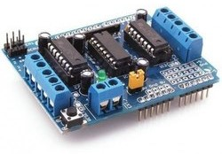
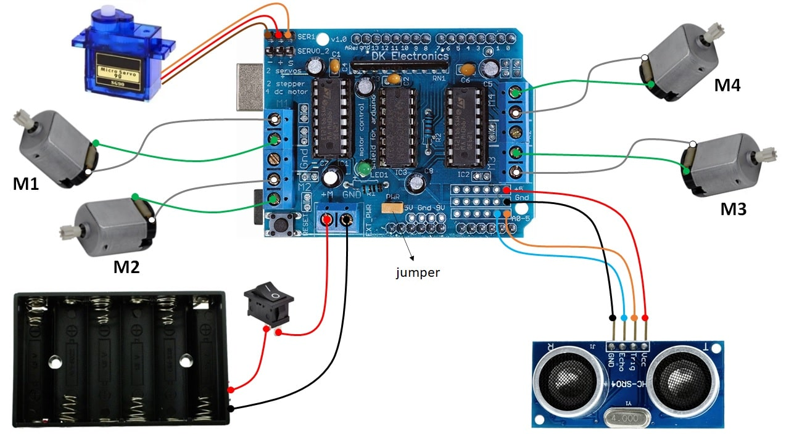

Configuração do Motor Shield L293D ponte H no Arduino

O motor shield L293D é uma placa que pode ser conectada ao arduino, permitindo controlar até 4 motores
DC ou 2 motores de passo e 2 servos, sendo muito utilizado em projetos de robótica. Este tutorial mostra
como ligar este shield no arduino e controlar 4 motores DC, 1 micro servo 9g e também um sensor
ultrassônico HC-SR04.
Como funciona?
O L293D recebe sinais do Arduino e amplifica a corrente para movimentar os motores. Como o Arduino
sozinho não consegue fornecer corrente suficiente para motores, o L293D age como um intermediário.
Dados técnicos:
- 2 chips L293D (Cada chip vem com 2 pontes H)
- Tensão de operação: 5V a 12V
- Tensão de saída: 4.5V a 36V
- Corrente de saída: 600mA por canal
- Controle de até 4 motores DC
- Até 2 Motores de Passo (Unipolar ou Bipolar) com bobina unica, dupla ou passos interlaçados
- 4 Pontes H: 0,6A por Ponte (1,2A de pico) com proteção térmica e diodos de proteção contra
retro-alimentação
- Resistores Pull Down mantem motores desativos durante a entrada de alimentação
- Botão de Reset Arduino disponível no topo da placa
- Terminais em bloco de 2 pinos e jumper para conexão de alimentação externa
Diagrama elétrico

Download do código:
🔗 motorShield_L293D.ino
Configuração:
1. Monte o circuito conforme o diagrama elétrico e "espete" o shield na placa arduino.
2. Baixe o código fonte do projeto indicado no link acima e faça o upload para a placa Arduino.